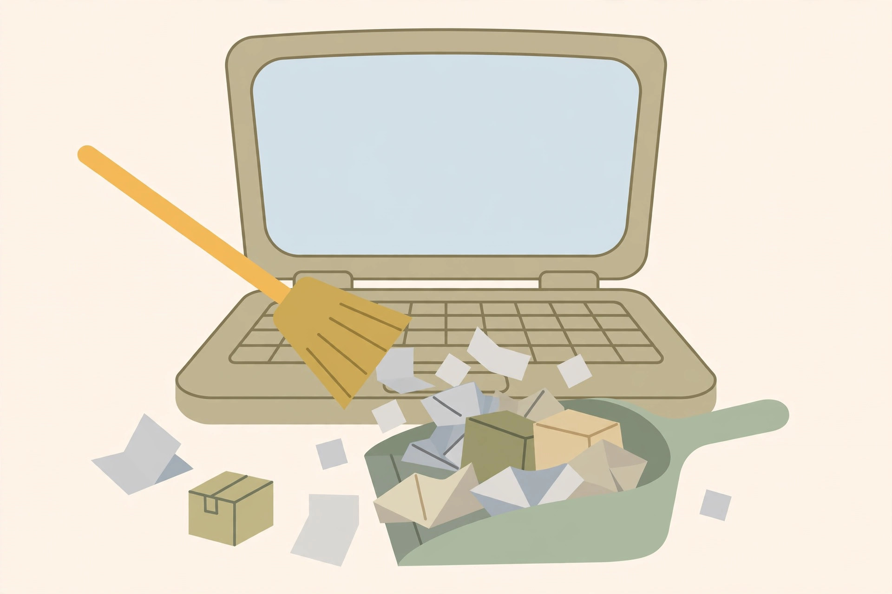

The no-parts Windows cleanup: storage, startup, and settings that actually help

Before any upgrade, there is a free hour of work that costs nothing but attention. Old Windows laptops accumulate years of temporary files, forgotten downloads, trial software, and startup programs that each added themselves to the sign-in queue. Clearing that load will not turn a tired machine into a new one — but it regularly turns an unusable one back into a usable one, and it tells you whether you actually need to spend money at all.
This cleanup deliberately uses only the tools already inside Windows. Search results for this topic are full of third-party cleaners and registry utilities; none of them is needed here. Microsoft's own Storage settings, Cleanup recommendations, Task Manager, and Storage Sense cover the same ground, for free, with the safety decisions already made by the people who built the operating system. Work in the order below — each step makes the next one easier to judge.
Before you delete anything: see where the space went
Open Settings > System > Storage. Windows breaks the drive down by category — installed apps, temporary files, documents, and more — so the first question answers itself: is the drive nearly full, and if so, with what? Microsoft treats the drive as being in a low-space state when the capacity bar on this page turns red. Note the free-space figure before you start; you will compare against it at the end, and "how much came back" is the honest measure of whether this cleanup mattered.
One boundary to know: Storage Sense, the automatic cleaner you will set up at the end, works on the system drive only — the drive Windows lives on, usually C:. Files on other drives are a manual job.
The cleanup, in order
- Clear temporary files. On the Storage page, open Temporary files, tick the categories you are clearing — temporary files themselves, Windows Update Cleanup, and Delivery Optimization files are the usual weight — and select Remove files. One deliberate exception: leave Downloads unticked unless you have first looked through the Downloads folder by hand. That folder is where years of deliberately saved installers, documents, and photos hide among the junk, and it is the one category on the screen that can contain things you meant to keep.
- Work through Cleanup recommendations. Also on the Storage page, Cleanup recommendations gathers large or unused files and unused apps into one review list. Microsoft designed it as a guided pass: review each suggested category, select what goes, and confirm with Clean up. It is the fastest route to the big, forgotten files — old videos, duplicate downloads — that the temporary files screen does not touch.
- Uninstall what you no longer use. In Settings > Apps, sort the installed list and remove programs you do not recognise as part of your routine. Trialware that shipped with the laptop and software tried once years ago are the standard finds. If a name means nothing to you, look it up before removing it — and leave shared components such as Visual C++ redistributables and your graphics driver software alone.
- Move the heavy archives off the drive. Photos, videos, and old projects you want to keep but rarely open belong on an external drive or in cloud storage. Moving is slower than deleting, but on a small drive it is often where most of the space actually is.
- Empty the Recycle Bin — last, on purpose. Everything deleted in the steps above is still recoverable until the bin is emptied. Check it once with fresh eyes, then empty it and note the new free-space figure.
One legacy tool is worth a sentence: the older Disk Cleanup utility, still reachable from the Start menu, can clear some system-file leftovers, and the related Defragment and Optimize Drives tool only helps a traditional spinning hard drive. If your laptop already has an SSD, skip defragmentation entirely — SSDs do not need it.
Thin the startup list with real numbers
Space is only half the drag. The other half is the crowd of programs that launch at every sign-in. Microsoft documents two places to manage them: Settings > Apps > Startup, with a simple toggle per app, and Task Manager's Startup view (Ctrl + Shift + Esc), which shows more detail — including Windows' measured impact label for each entry.
Those labels are measurements, not vibes. Microsoft defines Low impact as under 300 milliseconds of CPU time and under 292 KB of disk use during startup, and High as over 1 second of CPU or over 3 MB of disk. Work down the High entries first. Chat apps, game launchers, music players, and updaters for programs you rarely open are the usual safe disables. Keep security software and anything driver-related enabled, and remember what disabling means: the program simply stops launching at sign-in. It is not uninstalled, it still opens normally when you click it, and the toggle reverses in seconds. Restart once and time the difference — a laptop that reaches a usable desktop sooner is the receipt that this step worked.
Automate it: Storage Sense, set up carefully
Everything above is a one-time pass; Storage Sense is the version that keeps happening. Turn it on at Settings > System > Storage. With its default settings, Storage Sense runs when the drive gets low on space and removes unnecessary temporary files, and it empties Recycle Bin items after they have sat there for a while — so the cleanup you just did by hand repeats itself before the drive drifts back into the red.
Set it up with your eyes open, because one default deserves a decision rather than acceptance: by design, Storage Sense does not touch your Downloads folder or your cloud-provider files unless you configure it to. Leave that setting off unless you have a deliberate reason and a tidy Downloads folder — the same caution as the Temporary files screen, now on a schedule. That one check is the difference between an automatic cleaner and an automatic regret.
The stop rule: when cleanup is not the answer
| After the cleanup… | Verdict |
|---|---|
| Free space recovered, startup list short, machine feels normal | Done. Set a reminder to re-check Storage in a few months; spend nothing. |
| Space is fine but the disk stays busy and launches crawl | The drive itself is the limit — the SSD upgrade is the honest next step, not more cleaning. |
| Memory stays crowded in Task Manager with a few programs open | RAM is the limit — check the machine's upgrade ceiling before buying. |
| The laptop runs Windows 10 and cannot run Windows 11 | Cleanup still helps today, but plan the longer term: Windows 10 support ended October 14, 2025, consumer ESU cover runs to October 12, 2027, and a lighter OS is the other road. |
What success looks like
Success has numbers attached. The Storage page shows visibly more free space than your starting note — and the capacity bar is no longer red. The Startup view lists a short, deliberate set of programs, none of them High-impact entries you do not recognise. Sign-in reaches a usable desktop noticeably sooner than it did this morning. And Storage Sense is on, with the Downloads setting left safely off — which means the machine now maintains the result on its own instead of sliding back. If all of that is true and the laptop still feels slow, you have learned something worth the hour: the bottleneck is hardware, it is measured rather than guessed, and the upgrade guides can be aimed at it precisely.